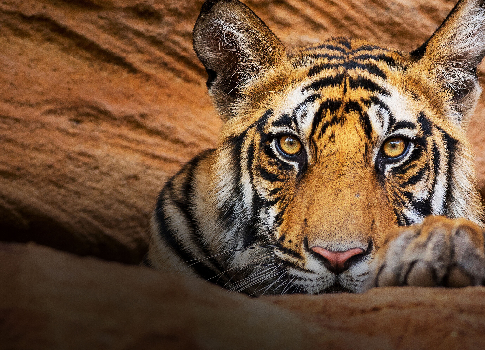

Case Study
More than meets the eye (of the tiger)
In 2019, BBC America launched Wonderstruck, a 24-hour micronet that, every Saturday, gives viewers a chance to sit back, relax, and travel the world from the comfort of their living room. Having previously executed groundbreaking social campaigns for landmark nature documentaries Planet Earth II, Blue Planet II, and Dynasties on the network, EA1 was tasked with creating a unique home for Wonderstruck across social media platforms.
Embracing the untraditional, BBC America wanted a true community that would show up to watch Sir David Attenborough and his colleagues on the weekend, turning to the network for solace, distraction, and mental health relief. We worked closely with internal teams to dream up bespoke creative, launching ASMR videos and relaxing breathing exercises as the news cycle began spiraling towards the pandemic. Over the past year, EA1 has cultivated and nurtured this burgeoning community, creating a space where fans share photography and their passion for nature.
As America went inside, Wonderstruck social accounts have provided creative outlets for photographers and have become a resource for educators suddenly faced with a job and a classroom that is completely online. We have sought to nourish a community for the curious, by the curious. We’ve helped audiences discover nature’s wonder through immersive audio/visual social experiences, insightful Reddit AMAs with nature filmmakers, amplification of up-and-coming nature photographers, and plenty of adorable animal GIFs.
Wonderstruck remains an oasis of unique, stunning content and community that we hope is helping audiences stay afloat through 2020 and long after.